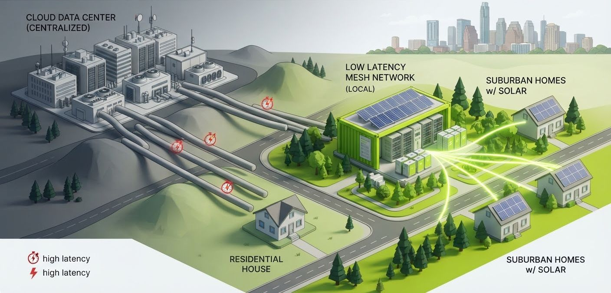

Try it: ask, then take a station offline or spike the grid price and ask again.
Your question goes to the station on your street, and the answer comes back.
Try the fleet
0 GPU-hours lost with 2+ nodes per feeder.
SimulationMore detail
What left your homeyour question stays on your street
What left your home
Your question, to the station on your street.
Your question and context, to a cloud data centre.
The mesh and the control towerone tower, many stations, three kinds of work
One control tower, many stations, three kinds of work
Stations serve the member homes around them and cover for each other on the same feeder.
Work queue, in priority order
- 1. Member questions
Interactive, always first. Answered by the station nearest the member. sim tier: member
- 2. Business inference
Batch jobs for local businesses, on the feeder or further out. sim tier: business
- 3. Open-science batch
Could run protein folding, Folding@home-style, on idle GPU time only. First to pause. sim tiers: partner, external batch
Change the fleet
Every station keeps its 30% backup reserve.
Reach today3 metros and 6 utility partners
CoServ 100 MW, GVEC 50 MW. From Base’s utilities page.
Base utilities pageAI next door, on the battery fleetprice and outages come first
AI next door, on the battery fleet
From frontier cloud models that bill per question and need the internet, to stations on Base’s battery fleet that answer the member homes around them. Base installs and services its fleet today (utilities page, CoServ press).

Price and outages come first
Compute follows ERCOT price. When price spikes toward the $5,000/MWh cap or an outage starts, the tower pauses AI jobs and the battery serves the home.
Work moves on the feeder
With two or more stations per distribution feeder, work moves to another station when one drops or goes into maintenance.
The 9-step pitch and evidence matrixeach beat, audience, page and evidence
The 9-step pitch and evidence matrix
Each beat, who it speaks to, the page that shows it, and the evidence behind it.
Frontier AI takes your data, bills per question, needs the internet.
Local answers measured at 2.2 s (laptop)
MeasuredBase is building compute stations on its battery fleet: “hundreds of small sites, each running GPU compute, spread across utility territories.”
SIGNAL: Base Distributed Compute job posting
SignalBase already reaches members: signup, install and service, in 3 metros with 6 utility partners (CoServ 100 MW, GVEC 50 MW).
SIGNAL: Base utilities page, CoServ press
SignalThe member gets “Your own AI, next door” through the same signup. Ask anything; the station near them answers.
Laptop and Jetson runs; Windows PC untested (#80)
MeasuredUseful on day one: outage hours, the week’s battery activity, permit records.
Simulated member, real permits, live NWS alerts
Simulated + realEach station serves the member homes around it; work moves to another station when one drops.
Sim: 0 GPU-hours lost with 2+ nodes per feeder
SimulationThe control tower runs jobs, slows or pauses with battery and price, and always protects the backup reserve.
Sim: 0 breaches of the 30% floor
SimulationOne unit-economics line.
Sim, 50 nodes, 3 days: $142 power only vs $1,041 with compute; 40% use is a dial
SimulationClose: “Base has the stations, the members and the crews. This is the software that makes them private AI for every member.”
SIGNAL: recruiter, “they don’t know how to manage that in a distributed computing environment”
SignalDeep dive: 3 pillars of evidenceunit economics, cover, the close
Deep dive: 3 pillars of evidence
Unit economics
The same 50 simulated battery nodes over 3 days, with and without compute.
40% GPU use is a dial in the sim; open fleet economics.
Stations cover for each other
Work moves to another station on the same feeder when one drops, and the reserve stays protected.
The control tower runs jobs, slows or pauses with battery and price, and always protects the backup reserve. Open the tower.
The close
“they don’t know how to manage that in a distributed computing environment”
— Base recruiter, on distributed compute
Base installs and services its fleet today (utilities page, CoServ press). Super Local AI adds the software layer: placement, a control tower, and a member AI service.
Base has the stations, the members and the crews. This is the software that makes them private AI for every member.
Open before we claim it#80 target PC, #85 power draw
Open before we claim it
- #80 Target PC untested
- #85 Power draw: 0.4 kW in the sim vs 350 W hub model